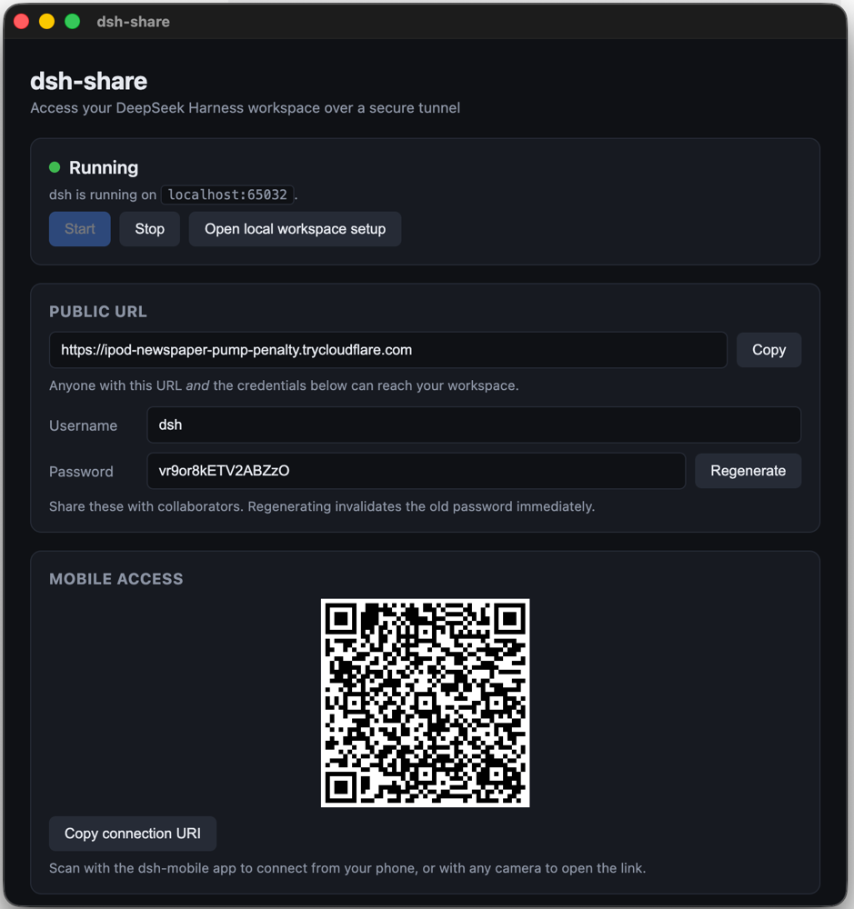
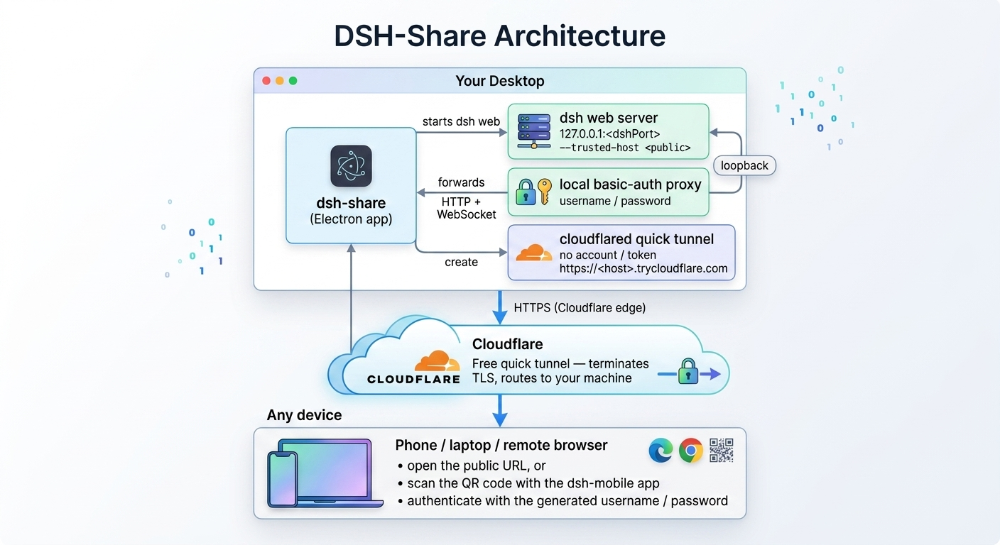
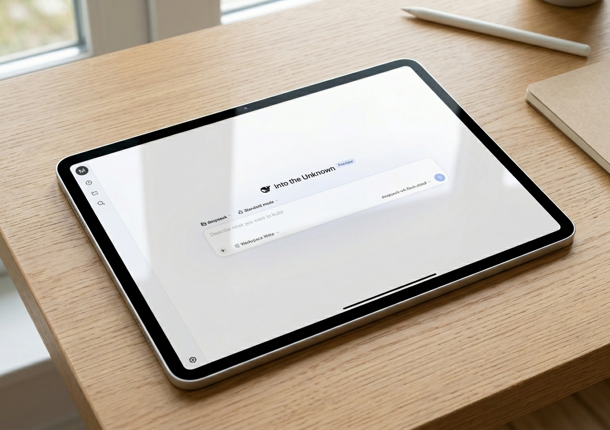

dsh-share is built for you to reach your local DeepSeek Harness (dsh) web workspace from your phone, your iPad, or any browser — over a secure, temporary tunnel that exists only while you use it. It's not for sharing: the URL and password are meant for you. Free, no account, no signup.
Bundled DeepSeek Harness v0.1.0-rc.6
dsh-share bundles everything you'd otherwise wire by hand — the tunnel, the auth, and the trusted-host dance — into a single control window.

The control window shows the status, your public https://*.trycloudflare.com URL,
auto-generated credentials, and a QR code for mobile access.
No ngrok account, no Cloudflare token, no settings to configure.

Your desktop → Cloudflare → your phone or iPad. The tunnel is free, needs no account, every hop is HTTPS, and it disappears the moment you stop.
Open the public URL in any browser on your iPad and keep building — the full dsh web UI, served from your desktop over HTTPS.

DeepSeek Harness web UI on an iPad, connected through a dsh-share tunnel.
Everything you need to reach your workspace from anywhere.
Just click Start. No ngrok account, no authtoken, no Settings to configure.
Quick tunnels need no account, token, or signup — HTTPS to your machine, for free.
Username and password are generated on first launch, stored locally, and regenerable from the UI.
A QR code in the control window — scan it with the dsh-mobile app to connect from your phone.
DMG / zip for macOS, NSIS for Windows, AppImage for Linux — built by GitHub Actions CI.
MIT licensed. Read the source, file an issue, or send a PR on GitHub.